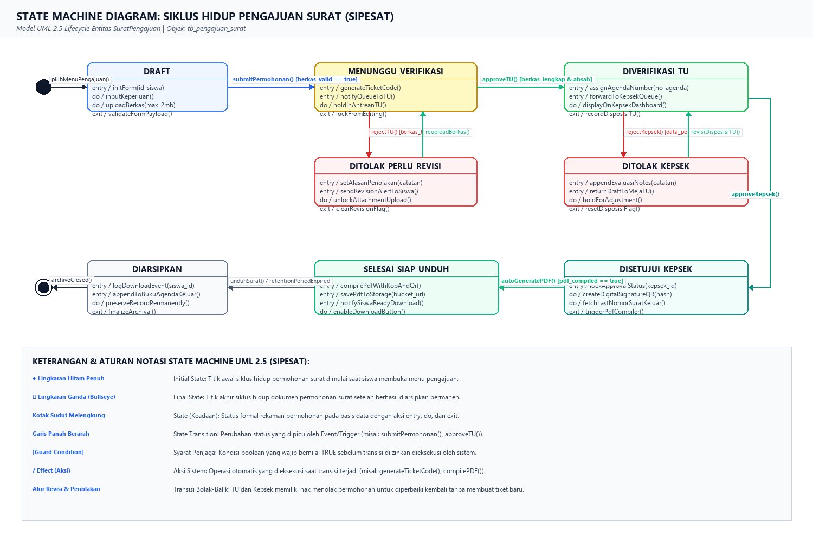
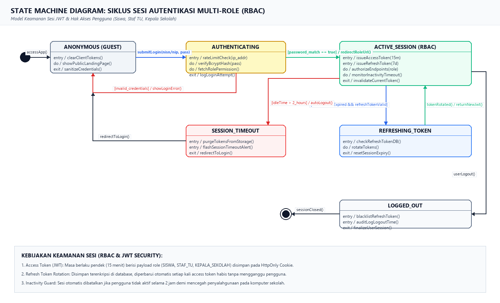

PROGRAM STUDI TEKNIK INFORMATIKA — FTIK UNIVERSITAS INDRAPRASTA PGRI (UNINDRA)
TAHUN AKADEMIK 2026/2027
Sistem Informasi Pengajuan Surat Siswa Berbasis Web (SIPESAT) adalah platform layanan persuratan digital sekolah yang dirancang untuk mengotomatisasi proses birokrasi pengajuan surat keterangan siswa, rekomendasi beasiswa, legalisir, dan dispensasi. Melalui arsitektur Role-Based Access Control (RBAC), sistem melibatkan tiga aktor utama yaitu Siswa, Staf Tata Usaha (TU), dan Kepala Sekolah. Setiap permohonan surat melewati alur hidup formal yang menuntut kepatuhan integritas data, validasi berkas fisik-digital, penomoran berurutan resmi sekolah, dan tanda tangan elektronik (TTE) berbasis kode QR terenkripsi.
State Machine Diagram (dikenal juga sebagai Statechart Diagram) dalam standar Unified Modeling Language (UML) 2.5 adalah diagram perilaku dinamis yang memodelkan siklus hidup diskret dari suatu objek tunggal, mulai dari inisialisasi awal hingga terminasi akhir. Berbeda dengan Activity Diagram yang memetakan aliran kerja lintas fungsi (workflow) atau Sequence Diagram yang memodelkan pertukaran pesan antarkomponen berurutan waktu, State Machine Diagram berfokus secara eksklusif pada perubahan status keadaan (state) internal suatu entitas akibat rangsangan peristiwa (event).
entry, do, dan exit.submitPermohonan(), approveTU()).[kondisi] yang wajib bernilai TRUE agar transisi diizinkan dieksekusi./ generateTicketCode()).
Entitas utama pada sistem SIPESAT adalah objek permohonan surat (direpresentasikan oleh model tabel tb_pengajuan_surat). Diagram berikut memodelkan seluruh siklus hidup dokumen permohonan dari pembuatan draf hingga pengarsipan permanen:

Uraian Rinci Status Keadaan (State) pada Gambar 2.1:
[berkas_valid == true], sistem menghasilkan kode tiket unik, memasukkan ke antrean TU, dan mengunci form.rejectTU(). Sistem membuka izin revisi upload dan mengirimkan alert notifikasi ke dasbor siswa.approveTU() dan menginput nomor agenda masuk TU. Permohonan diteruskan ke antrean Kepala Sekolah.
Entitas sesi pengguna (UserSession) memegang peranan krusial dalam keamanan sistem. Diagram berikut memodelkan siklus autentikasi berbasis JSON Web Token (JWT) dengan pembatasan hak akses berbasis peran (RBAC):

Uraian Rinci Status Keadaan Sesi pada Gambar 2.2:
| State Asal | Event / Trigger | Guard Condition | Action / Effect | State Tujuan |
|---|---|---|---|---|
| INITIAL (●) | openMenuPengajuan() | user_authenticated == true | initFormPayload() | DRAFT |
| DRAFT | submitPermohonan() | form_valid && file_size <= 2MB | generateTicketCode(), notifyTU() | MENUNGGU_VERIFIKASI |
| MENUNGGU_VERIFIKASI | rejectTU() | berkas_tidak_lengkap || buram | setCatatanRevisi(), alertSiswa() | DITOLAK_PERLU_REVISI |
| DITOLAK_PERLU_REVISI | reuploadBerkas() | file_revisi_valid == true | updateLampiran(), notifyTU() | MENUNGGU_VERIFIKASI |
| MENUNGGU_VERIFIKASI | approveTU() | berkas_lengkap_dan_absah == true | setNoAgenda(), forwardToKepsek() | DIVERIFIKASI_TU |
| DIVERIFIKASI_TU | rejectKepsek() | evaluasi_draf_tidak_sesuai | returnDraftToTU(), logNotes() | DITOLAK_KEPSEK |
| DITOLAK_KEPSEK | revisiDisposisiTU() | data_disposisi_diperbaiki == true | reForwardToKepsek() | DIVERIFIKASI_TU |
| DIVERIFIKASI_TU | approveKepsek() | validasi_kepsek_disetujui == true | createQR_TTE(), generateNoSurat() | DISETUJUI_KEPSEK |
| DISETUJUI_KEPSEK | autoGeneratePDF() | pdf_binary_compiled == true | saveToStorage(), notifySiswa() | SELESAI_SIAP_UNDUH |
// Definisi Enum State Status Pengajuan pada prisma/schema.prisma
enum StatusPengajuan {
DRAFT // Siswa menyusun formulir
MENUNGGU_VERIFIKASI // Berkas masuk antrean TU
DITOLAK_PERLU_REVISI // TU meminta perbaikan berkas
DIVERIFIKASI_TU_MENUNGGU_KEPSEK // Lolos verifikasi TU, antrean Kepsek
DITOLAK_KEPSEK // Kepsek meminta evaluasi draf
DISETUJUI_KEPSEK // Kepsek menyetujui penerbitan
SELESAI_SIAP_UNDUH // PDF resmi & QR Code siap diunduh
DIARSIPKAN // Dokumen tersimpan permanen
}| Kode SRS | Deskripsi Kebutuhan Fungsional | State Entitas Terkait | Trigger Transisi |
|---|---|---|---|
| REQ-F-01 | Autentikasi Pengguna & Pembatasan Akses Berbasis Peran (RBAC) | ANONYMOUS → ACTIVE_SESSION | submitLogin() |
| REQ-F-02 | Pengajuan Surat Mandiri & Unggah Berkas Persyaratan (Maks 2MB) | DRAFT → MENUNGGU_VERIFIKASI | submitPermohonan() |
| REQ-F-03 | Verifikasi Kelengkapan, Disposisi & Penolakan Berkas oleh TU | MENUNGGU_VERIFIKASI → DIVERIFIKASI_TU | rejectTU(), approveTU() |
| REQ-F-04 | Validasi Eksekutif & Persetujuan Pengesahan Kepala Sekolah | DIVERIFIKASI_TU → DISETUJUI_KEPSEK | rejectKepsek(), approveKepsek() |
| REQ-F-05 | Penomoran Otomatis Berurutan & QR Code Enkripsi TTE | DISETUJUI_KEPSEK (Internal Actions) | createQR_TTE() |
| REQ-F-06 | Pelacakan Status Waktu Nyata & Pengunduhan Dokumen PDF Resmi | SELESAI_SIAP_UNDUH → DIARSIPKAN | autoGeneratePDF(), unduhSurat() |
Berdasarkan hasil perancangan State Machine Diagram pada Tugas 5 ini, dapat disimpulkan bahwa:
SuratPengajuan) telah berhasil dimodelkan secara komprehensif mencakup seluruh kemungkinan status (normal, penolakan revisi TU, evaluasi Kepala Sekolah, hingga penerbitan dan pengarsipan).UserSession) telah dimodelkan dengan standar keamanan industri modern yang menerapkan otentikasi JWT, rotasi refresh token, dan pembatasan batas waktu inaktif (inactivity timeout).Jakarta, Oktober 2026
Kelompok 7 RPL — Teknik Informatika UNINDRA